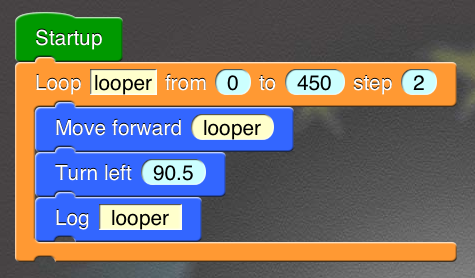
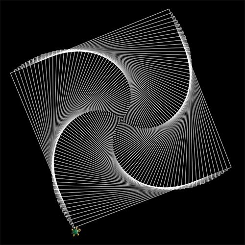
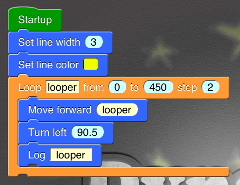
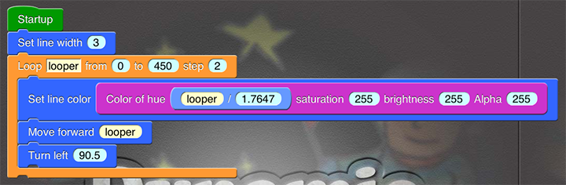
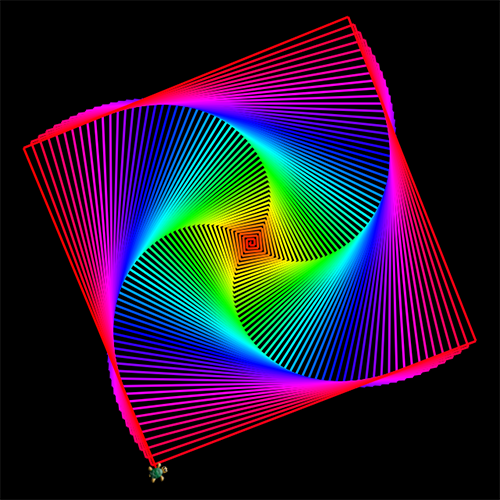
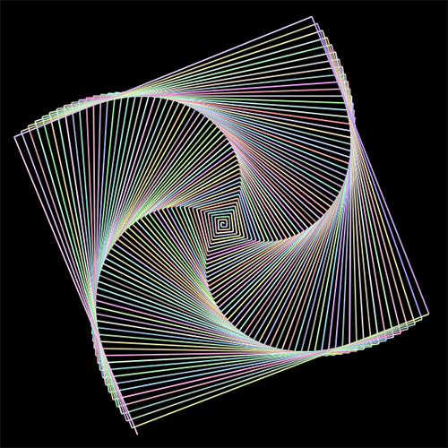

Turtle Spire
- Create a new Dynamic board named "My second board" or any name you like.
- Drag a "Startup" block out of the Category "Control".
-
Drag a "Loop from to step" block out of the same category, and connect it to the bottom socket of "Startup" block.
Loop variable from begin to end step stepNow please take a look at this block definition. You will notice a virtual block here in the definition. In all the arguments, there are black text we called Argument Name. When you are asked to edit a corresponding argument in your program, you will see text like "the argument named ..." in this tutorial. That is asking you to edit the argument at the same place of the argument with the quoted Argument Name in virtual block.
Type: Control
This block is one of the Loop blocks. You can plug other blocks into this block's inner socket to form a Sub-Block-Sequence.
It will assign the numbers begin, begin + step, begin + 2*step... to variable one by one, but stop assigning when the number is greater than end. With each value of variable, it will run its Sub-Block-Sequence once (one "loop").The begin, end, step can't be changed while this block is running.
Warning: if step is zero , this block will act like a "Loop forever" block.
- Drag a "Move forward" block out of the Category "Turtle", and connect it to the inner socket of "Loop from to step" block.
- Drag a "Turn left" block out of the Category "Turtle", and connect it to the bottom socket of "Move forward" block.
-
Drag a "Log" block out of the Category "Interaction", and connect it to the bottom socket of "Turn left" block.
Log data
Type: Interaction
Write data into the log book.
The format will be determined automatically according to the type of data. - Change the first argument in "Loop from to step" block (the argument named "variable") to "looper" or any name you like. Argument naming details can be found in the definition of a block. If you are confused, go back and check step 3.
-
Change the third argument (the argument named "to") to 450.
- Change the argument named "step" (which is the fourth argument) to 2.
- Change the argument named "distance" in "Move forward" block to the name you choose for your loop variable in step 7.
- Change the argument named "angle" of "Turn left" block to 90.5.
- Change the argument named "data" of "Log" block to the loop variable.
-
Your finished program should be like:

-
Run your program. The image drawn by the turtle should be like the following.
 -
Click the bottom-right button and you will see the log book. You can observe the change of loop variable in the log book because you used a "Log" block to put it into the log book just now.
Note: There are at most 100 lines of recent log displayed in the log book. When the limit is exceeded, the oldest logs lined will be removed automatically. This may make you miss some important information, so do not put too much log!
- Save Thumbnail: save central part of the image you draw as thumbnail of your program. The thumbnail will be later displayed in Board Manager.
-
Save Photo: save the image you draw into your photo library.
The resolution of saved photo depends on the type of your iPad. If your iPad has a retina display. You can save photos with 2048x1536 or 1536x2048 resolution. - Send Email: send your program in an email. The program can be import into Dynamic ART from the email later. You can use this function to share your program with someone or just backup.
- Go back to your board.
-
Drag a "Set line width" block out of the Category "Utility", and connect it between "Startup" and "Loop from to step" blocks.
Set line width width
Type: Utility
Set how thick the lines and borders of shapes are on the stage. Use zero to draw shapes without borders.
-
Drag a "Set line color" block out of the same category, and connect it between "Set line width" and "Loop from to step" blocks.
Set line color color
Type: Utility
Set the default color used to draw lines and borders of shapes on the stage.
- Change the argument in "Set line width" block to 3.
- Click the argument in "Set line color" block. You can see the color picking view appear in the keyboard area. The picking view is based on the HSBA Color System. Pick your favorite color in it by moving the cursor or clicking button "+" or "-".
-
This time, your program should be like:
 - Run your program again. You should see the rectangular spire with your favorite color.
- Go back to your board.
- Drag "Log" block away from "Turn left" block, and you will see a trash bin appear in the bottom-right corner. Drag it onto the bin and drop it. The block will be removed from your Dynamic board.
- Drag "Set line color" block away from "Startup" block, and all blocks below it will automatically follow. Drop it somewhere else on the board.
- Drag "Loop from to step" block away from "Set line color" block, and connect it back to "Set line width" block.
- Drag "Set line color" block, and connect it before "Move forward" blocks.
-
Drag a "Color of HSBA" block from Category "Utility", and connect it onto the argument in "Set line color" block.
Color of hue h saturation s brightness b alpha aType: Utility
Generate a color with h, s, b, a in HSBA color system.
Note: All the four arguments' value should between 0 and 255 (including 0 and 255). If any value is not in the range, it will be replaced by 0 (if it is less than 0) or 255 (if it is larger than 255)
- Change the two argument named "saturation" and "brightness" in "Color of HSBA" block both to 255.
- Drag a "Divide" block from Category "Expression", and connect it onto the argument named "hue" in "Set line color" block.
- Change the argument named "x" (which is the first argument) in "Divide" block to the loop variable. (If you forget what a loop variable is, chech step 7 in Section 1)
- Change the argument named "y" (which is the second argument) in "Divide" block to 1.7647 (which is 450 / 255).
-
This time, your program should be like:
 -
Run your program again. You should see the rectangular spire with amazing grandient color.


If you have any problems, please refer to the example: